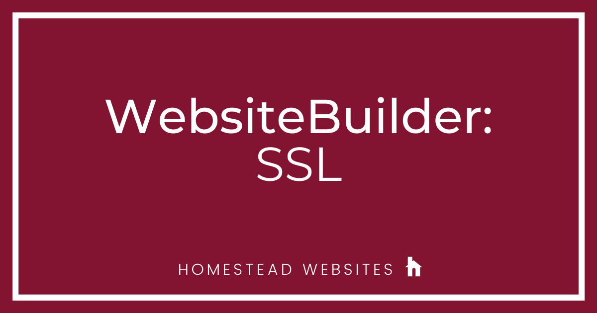
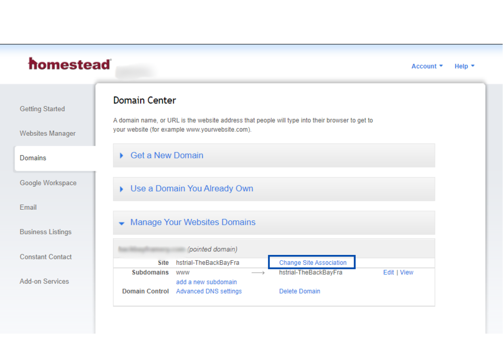

Homestead websites built using Website Builder can be secured using free SSL. Normal SSL installation can be done by updating the A record to point to a secure IP address, which can be found in this Homestead community article. In some cases, however, DNS Error 1001 appears after updating the A record.

The Engineering Team is aware of this problem and is looking for a permanent resolution. As a workaround, follow the instructions below.
-
Create a temporary website using Website Builder in the Websites Manager page.
-
Associate the domain with the temporary website.
- Click the Domains link in the left navigation menu.
- Scroll to your domain and click Change Site Association.

- Choose the website you want the domain to point to from the drop-down menu.
- Click Save to confirm the change. It may take some time to take effect.
Note: Keep the Homestead Cloud URL for the original website; you will associate the domain with it again later.
- Republish the original website without the domain name, using only the Homestead Cloud URL.
- After 5–15 minutes, associate the domain with the original website again.
- Publish the website with the domain.
- Open homesteadssl.com and enter the domain name.
- Click Next.
Note: Disregard differences in the last two digits of the IP address. Homestead uses a secured IP range for SSL certificates.
- Advise the customer that propagation can take up to 24 hours.
- Delete the temporary website unless the customer asks to keep it.